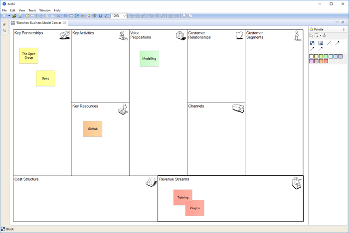

Canvas 建模工具包是Archi的扩展 ，有点类似于 草图视图 为您提供创建和编辑“画布”的工具，例如 商业模式画布。使用画布建模工具包，您可以设计和创建可重复使用的画布模板 ，以便与同事共享也可以简单地将其用作预先设计的工具 ，以勾勒出想法和模型。您还可以链接到模型中的其他视图 ，例如 ，您可以从 ArchiMate视图链接到业务模型画布视图 ，以提供业务计划。

Archi中的商业模式画布
商业模式画布根据 知识共享归因-共享类似 3.0 未移植许可证